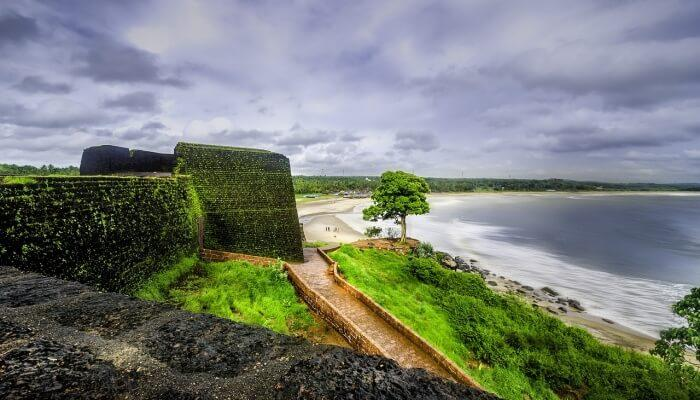
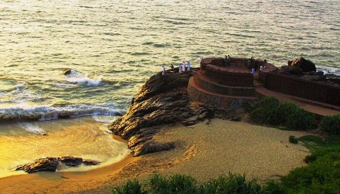
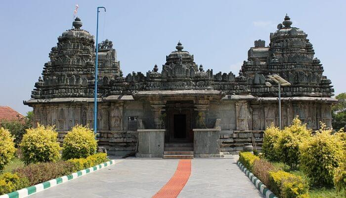

kasargod

Kasaragod, also known as Kasargod, is an offbeat getaway of Kerala. Tucked in the Western Ghats’ hills, this tourist spot offers enriched history, Eye-pleasing nature, the culture, and folklore cladded experiences to its tourists.The whole place is tied by harmony, be it natural, be it communal. Friendly locals, temples, stunning mosques, and churches will give you an idea of the modern Kasargod. On the other hand, places to visit in Kasargod include tranquil beaches of the Arabian Sea, Kerala backwaters, mighty forts, and Western Ghats’ hidden spots and the wildlife sanctuary calmly presents itself in front of its visitors.
Best time to visit Kasargod
Kasargod offers an array of destinations to its tourists. The ideal time for a visit to this place would be from post-monsoon till winter. If you plan to visit the sanctuaries, hills, and forts, monsoon and post-monsoon period will be ideal. It is always advisable to check for the local weather before arranging for any trip.
Top Places To Visit In Kasargod
Bekal Fort

As one of the unique yet best places to visit in Kasaragod, Bekal fort stands firm in its place. Standing at the mighty Arabian Sea banks, this 300 years old palace tells a tale of persistence, resistance, and power. It is the largest Fort in Kerala and was built by the Shivappa Nayaka of Keladi in 1650 AD. This place is a must-visit for tourists wishing to relive the charm of the bygone era.
Location: Kasaragod Road, PO Bekal Fort, Beside Bekal Fort Railway Station Dist, Bekal, Kerala 671316
Parappa Wildlife Sanctuary
This is the ultimate hiking paradise for nature lovers. Precious wildlife like porcupines, the Malabar hornbill, Slender Loris, slow turtles, and many more are the forest’s natural inhabitants. With its enchanting natural treasure, this is one of the best Kasaragod sightseeing destinations.
Location: Kasaragod District, Kerala
Mallikarjuna Temple

Kasaragod visiting places are considered as one of the most popular tourist spots and are known as the heart for peaceful temples of Lord Shiva. Situated in the middle of Kasaragod city, the devotees of this temple daily pray to Lord Shiva. Built by the Iyer Kings, this temple is open to all to visit and witness the holy idol of Lord Shiva. The temple is not only a fine piece of architecture but also beholds beautiful paintings in its wall.
Location: Kasaragod, Kerala 671123.